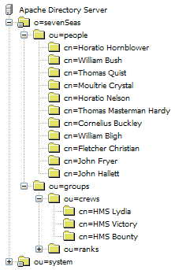

ApacheDS 2.0
Downloads
Documentation
- Basic User Guide
- Advanced User Guide
- Developer Guide
- Kerberos User Guide
- Configuration
- JavaDocs
- Cross-Reference
Support
Community
About Apache
1.5. - About the sample configurations and sample directory data
This section describes basic parameters used throughout the examples in this guide. It also introduces the sample directory “Sailors of the seven seas”, and other requisites you need.
Basic server parameters
In the following sections we assume that you will install, configure and run Apache Directory Server on a host with the following host name using the parameters given in the following table:
| Parameter name | Parameter value |
|---|---|
| Hostname | zanzibar |
| Port | 10389 |
| Suffix (“Base DN”) | o=sevenSeas |
| Admin User DN | uid=admin,ou=system |
| Admin User Password | secret |
Before you start playing with the data make sure that you have added a partition with the suffix o=sevenSeas to the server. How to do this is described [here|1.4. Basic configuration tasks#Adding your own partition (suffix)] In order to increase recognition, all examples of the Basic User’s Guide use these values. Adjust them to your needs (especially the password).
LDAP Clients
LDAP is a client/server protocol. Hence you need an LDAP client to connect remotely to the Apache Directory Server (or at least the directory part of it, to be precise). There are different options here. Because the protocol is standardized, you may use every LDAP compliant client. This is comparable to HTTP, where you can use each web browser to communicate with virtually each web server, and totally different to relational databases. The latter have a (more or less) standardized query language (SQL), but vendors tend to use individual network access protocols. In practice, the LDAP situation is even better than HTTP, because there were no LDAP browser wars …
Many software components may act as an LDAP client. Normally they use LDAP libraries to connect. In the following sections you meet LDAP clients with GUI and LDAP command line tools. Some Java programming examples which takes advantage of JNDI are provided as well.
In other sections you will learn how E-Mail clients like Mozilla Thunderbird and application servers like Apache Tomcat connect to Apache Directory server, either to use the data stored in the directory (e.g. mail addresses) or to perform authentication and authorization.
Recapitulating the Basic User’s Guide describes connecting to the server with tools provided by ApacheDS as well as third party products. In all cases the examples will use the connection data depicted above (ldap://zanzibar:10389/o=sevenSeas)
The sample data (Sailors of the seven seas)
The file Apache DS Tutorial contains some sample data, which is used in the following sections. It is a text file in the so called LDIF format. LDIF stands for LDAP Data Interchange Format. It is widely adopted in the LDAP world and standardized in RFC 2849. Therefore you are able to import our sample data into other directory solutions as well, not only into Apache Directory Server.
The sample directory tree contains entries for persons and groups. These are structured in sub trees (ou=people and ou=groups), see image below. The person entries describe sailors (historic and fictional), the group entries bundle them. An example for a group is the ship crew of HMS Bounty.

This snippet of the file represents a single entry, just to give you an impression of how LDIF files look like.
...
# Entry for Fletcher Christian
#
dn: cn=Fletcher Christian,ou=people,o=sevenSeas
cn: Fletcher Christian
objectClass: top
objectClass: person
objectClass: organizationalPerson
objectClass: inetOrgPerson
sn: Christian
givenName: Fletcher
description: Lieutenant Fletcher Christian
manager: cn=William Bligh,ou=people,o=sevenSeas
...
There are different ways to import the data. Generally perform the following steps:
- Download and install the server, described in 1.3. Installing and starting the server
- Configure a partition for the sample date, described in 1.4. Basic configuration tasks
- Import the data, for instance using Apache Directory Studio
h2. Resources
- RFC 2849 - The LDAP Data Interchange Format (LDIF) – Technical Specification